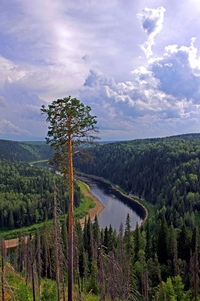

Во влажных тропических лесах живёт две трети всех видов животных и растений планеты. Предполагается, что миллионы видов животных и растений до сих пор не описаны. Во влажных тропических лесах недостаток солнечного света на нижнем ярусе, как правило, сильно препятствует образованию подлеска. Это позволяет человеку и животным достаточно легко продвигаться по лесу. Если же по какой-либо причине лиственный навес отсутствует или ослаблен, нижний ярус быстро покрывается плотной, труднопроходимой зарослью лиан, кустарников и небольших деревьев — такое образование называется джунглями.
Разнообразие животных и растений там намного больше, чем в тропических лесах Африки и Азии. Каждый десятый описанный вид животного или растения распространён в амазонских джунглях. Здесь было описано, как минимум, 40000 видов растений, 3000 видов рыб, 1294 вида птиц, 427 видов млекопитающих, 428 видов земноводных, 378 видов пресмыкающихся и от 96660 до 128 843 видов различных беспозвоночных. Здесь присутствует самое большое на Земле разнообразие растений, в том числе 16 тыс. видов деревьев
Тайга — крупнейший сухопутный биом в мире, её площадь составляет 15 млн км². Тайга — самая большая по площади ландшафтная зона России. Её ширина в Европейской части достигает 800 км, а в Западной и Восточной Сибири — 2150 км. Таёжные зоны России стали формироваться ещё до наступления ледников. В Европе таёжные леса занимают практически весь Скандинавский полуостров и Финляндию. В России южная граница тайги проходит примерно через Псков, Ярославль, Нижний Новгород, Екатеринбург, Томск, Читу, Комсомольск-на-Амуре и средний Сихотэ-Алинь на Дальнем Востоке[4], где её сменяют смешанные леса. Большая часть Западной и Восточной Сибири, Дальнего востока, горные массивы северного и среднего Урала, Алтая, Саян, Прибайкалья, северного Сихотэ-Алиня, северного Большого Хингана покрыты таёжными лесами. Тайга делится (в направлении от юга на север) на три подзоны по характеру растительности: южную, среднюю и северную. В северной тайге доминируют низкорослые и разреженные ели и сосны, в средней тайге растут в основном ельники-черничники. Растительность южной тайги значительно более разнообразна.
- Джунглевый туризм (англ. Jungle tourism) — одна из разновидностей приключенческого туризма, которая во многом похожа на экологический туризм, но отличается тем, что имеет отношение к конкретному региону, его специфике и определяется активными многогранными физическими средствами передвижения в тропических лесах.
- Новичкам путешествовать по тайге противопоказано, потому что отсутствие опыта - опасно для здоровья и даже жизни. А одиночное путешествие допустимо только имеющим достаточный опыт. Намечая поход в тайгу, даже видавшие виды туристы, заранее и очень тщательно начинают подготовку. Путешествие по тайге имеет характерную особенность в том, что невозможно внезапно положить конец походу и практически не реально получить медицинскую помощь.